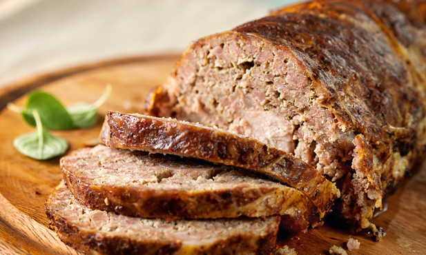

Rolo de Carne

Esta receita de rolo de carne vai deixá-lo com água na boca. Recheado com
queijo, fiambre e linguiça, vai ser de comer e chorar por mais. Veja o
nosso passo a passo e saiba como fazer rolo de carne.
Ingredientes
- Chouriço de carne 200 g
- Queijo flamengo fatiado 120 g
- Fiambre fatiado 60 g
- Bacon fatiado 100 g
- Sal 1 c. de sobremesa
- Pimenta 1 c. de chá
Passos
-
Tempere a carne com sal e pimenta. Junte o chouriço picado e misture.
-
Estenda a carne numa folha de película aderente bem esticada na bancada.
-
Por cima da carne, comece por colocar as fatias de fiambre, depois as de
queijo e finalmente a linguiça cortada de verticalmente.
-
Com a ajuda da película aderente enrole cuidadosamente a carne até
formar um rolo.
- Retire a película e cubra o rolo de carne com as fatias de bacon.
-
Leve ao forno pré-aquecido, e deixe assar durante uma hora a 180 ºC.
Back to main page